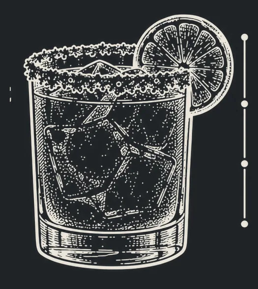

Engraved line art on slate, set on warm paper. Black and off-white carry everything; brass is the single accent, used for markers, progress and the cook-mode action.
Bodoni Moda for titles and amounts. Instrument Sans for everything you read while mixing. Mobile sizes shown; body never below 15px.
4px base. Page gutter 16px on phones. Sections 36–40px apart.
If you prefer it up, strain into a chilled coupe without ice.
